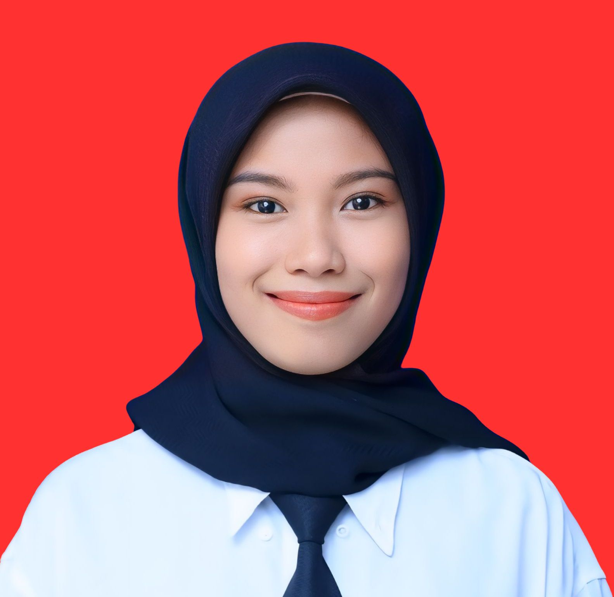
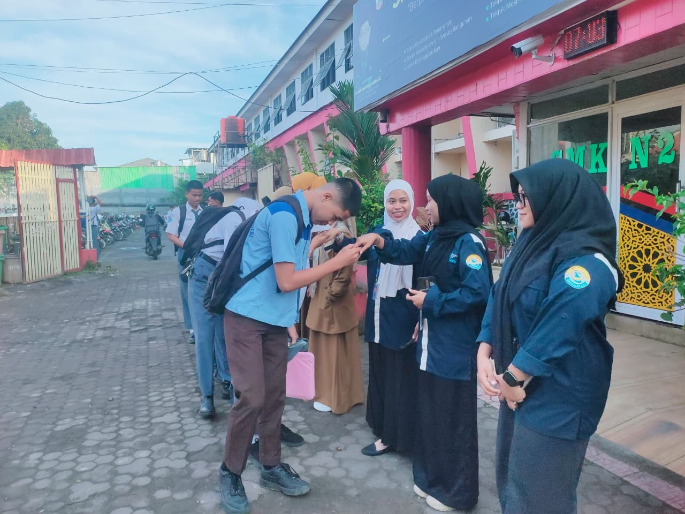

E-Portfolio
Nur Akifa Rifai
Selamat datang di E-Portfolio Nur Akifa Rifai. Website ini merupakan ruang refleksi awal yang menjadi fondasi dasar dalam membentuk karakter saya sebagai mahasiswa PPG calon guru menuju guru yang profesional, reflektif, dan inovatif.

Profil Mahasiswa

NUR AKIFA RIFAI
Kontak Email
nurakifarifa@gmail.comNomor WhatsApp
+62 822-1706-8764"Guru yang baik bukan hanya mengajarkan ilmu, tetapi juga menuntun murid menemukan potensi terbaik dalam dirinya."
Data Diri Akademik
Nomor Induk Mahasiswa
2590554950598
LPTK PPG
Universitas Negeri Makassar
Bidang Studi
Broadcasting dan Perfilman
Lokasi PPL Terbimbing
SMK Negeri 2 Makassar
Dosen Pendamping Lapangan
Dr. Sanatang, S.Pd., M.T.
Guru Pamong
Sitti Rokmah, S.Si., M.Pd.
Asal & Keunikan Daerah
Saya berasal dari Kabupaten Sinjai. Kabupaten Sinjai memiliki keunikan yang tidak dimiliki banyak daerah lain karena memiliki bentang alam yang lengkap, mulai dari pegunungan, dataran rendah, pesisir pantai, hingga wilayah kepulauan. Sinjai juga dikenal dengan julukan "Bumi Panrita Kitta" yang menunjukkan kuatnya tradisi keilmuan dan nilai-nilai keagamaan yang diwariskan secara turun-temurun. Selain itu, Sinjai memiliki destinasi wisata unggulan seperti Pulau Sembilan dan Hutan Mangrove Tongke-Tongke yang menjadi kebanggaan masyarakat setempat.
Inspirasi & Tujuan Menjadi Guru Profesional
Melihat kondisi bangsa saat ini yang masih menghadapi berbagai tantangan dalam bidang pendidikan, karakter, dan kualitas sumber daya manusia, saya semakin termotivasi untuk berkontribusi dalam mencerdaskan kehidupan bangsa. Saya meyakini bahwa kemajuan suatu negara tidak hanya ditentukan oleh perkembangan teknologi atau ekonomi, tetapi juga oleh kualitas pendidikan yang membentuk generasi penerusnya. Inspirasi saya untuk menjadi guru muncul dari keyakinan bahwa guru merupakan akar peradaban. Dari tangan seorang guru lahir pemimpin, ilmuwan, tenaga profesional, dan berbagai generasi yang akan menentukan arah masa depan bangsa. Oleh karena itu, perubahan besar bagi negara dapat dimulai dari ruang kelas melalui pendidikan yang berkualitas dan berkarakter. Saya menyadari bahwa untuk mengajak peserta didik menjadi pribadi yang baik, saya harus terlebih dahulu menjadi teladan yang baik. Guru bukan hanya bertugas menyampaikan ilmu pengetahuan, tetapi juga memberikan contoh dalam sikap, perilaku, dan nilai-nilai kehidupan. Melalui profesi guru, saya ingin berkontribusi dalam membentuk generasi yang cerdas, berintegritas, kritis, dan memiliki kepedulian terhadap masyarakat serta negaranya..
Analisis Artefak Pembelajaran
Bagian ini memuat refleksi dan analisis mendalam terhadap produk pembelajaran (Perangkat Ajar, Media, atau Asesmen) yang telah disusun selama pelaksanaan PPL.
Perangkat Pembelajaran
Modul Ajar & Lembar Kerja Peserta Didik (LKPD)
Kendala utama yang saya hadapi dalam menyusun rencana pembelajaran ini adalah keterbatasan pengalaman dalam merancang perangkat pembelajaran dengan bantuan guru pamong saya di sekolah tempat saya ppl. Penyusunan rencana pembelajaran ini merupakan pengalaman pertama bagi saya, sehingga saya masih memerlukan waktu untuk memahami berbagai komponen yang harus disusun secara sistematis dan saling terintegrasi, mulai dari tujuan pembelajaran, asesmen, aktivitas pembelajaran, hingga penyusunan LKPD. Selain itu, saya juga harus memastikan bahwa seluruh komponen pembelajaran selaras dengan karakteristik murid dan capaian pembelajaran yang ingin dicapai. Kondisi tersebut membuat proses penyusunan rencana pembelajaran membutuhkan waktu, ketelitian, dan berbagai penyesuaian sebelum menghasilkan rancangan yang sesuai. Meskipun demikian, pengalaman ini menjadi kesempatan berharga bagi saya untuk belajar dan mengembangkan kompetensi profesional sebagai calon guru dalam merancang pembelajaran yang efektif, terstruktur, dan berpusat pada murid.
A. Kendala Penyusunan
Selama penyusunan produk pembelajaran, kendala utama yang saya hadapi adalah merancang pembelajaran yang dapat mengakomodasi keberagaman karakteristik dan kemampuan murid. Meskipun telah melakukan asesmen diagnostik, saya masih mengalami kesulitan dalam menerjemahkan hasil pemetaan tersebut ke dalam Modul Ajar dan LKPD yang sesuai dengan kebutuhan setiap kelompok peserta didik. Tantangan terbesar adalah menentukan strategi pembelajaran yang mampu memberikan dukungan kepada peserta didik yang masih memerlukan bimbingan, sekaligus tetap memberikan tantangan yang bermakna bagi murid yang memiliki kemampuan lebih tinggi. Oleh karena itu, proses perencanaan dan penyusunan perangkat pembelajaran memerlukan waktu, refleksi, dan penyesuaian yang cukup intensif agar tujuan pembelajaran dapat tercapai secara optimal.
B. Adopsi Teori & Pedagogi
Landasan utama dalam penyusunan produk pembelajaran saya adalah filsafat Konstruktivisme yang diimplementasikan melalui model Problem-Based Learning (PBL). Pendekatan ini menekankan bahwa murid membangun pengetahuannya melalui pengalaman, eksplorasi, dan pemecahan masalah secara aktif. Penerapan prinsip tersebut terlihat dalam Modul Ajar dan LKPD yang saya susun, di mana pembelajaran diawali dengan penyajian masalah kontekstual melalui studi kasus yang relevan dengan materi. Selanjutnya, murid dibimbing untuk berdiskusi, melakukan penyelidikan, dan menemukan solusi secara kolaboratif melalui aktivitas yang terstruktur dalam LKPD. Dalam proses ini, peran guru tidak lagi menjadi sumber informasi utama, melainkan sebagai fasilitator yang mendampingi dan mengarahkan murid dalam membangun pemahamannya secara mandiri.
C. Faktor Keberhasilan
Selama praktik mengajar, salah satu keberhasilan yang dilakukan adalah menerapkan model Problem Based Learning (PBL) dalam mengajar, meskipun masih ada beberapa hal yang perlu diperbaiki dan dievaluasi. Memanfaatkan teknologi digital sebagai media pembelajaran juga diterapkan dalam praktik mengajar. Hal ini sangat penting dalam mendukung proses belajar mengajar agar murid bisa lebih memahami apa yang saya sampaikan dengan bantuan visualisasi digital yang interaktif.
D. Adaptasi untuk Situasi Berbeda
Jika produk ini diterapkan pada kelas dengan karakteristik siswa yang berbeda, khususnya jika rata-rata kemampuan kognitif dan daya tangkap siswa lebih rendah, komponen utama yang harus saya rombak adalah Lembar Kerja Peserta Didik (LKPD) dan Asesmen Formatif. Saya perlu mengubah instruksi pada LKPD menjadi lebih step-by-step (memberikan scaffolding atau perancah yang lebih banyak) agar siswa tidak frustrasi. Selain itu, saya perlu menyesuaikan bahan bacaan pada Modul Ajar agar menggunakan diksi yang lebih sederhana, serta memodifikasi rubrik penilaian agar target pencapaian (KKTP) lebih realistis dengan kondisi kesiapan belajar mereka saat itu.
Lampiran Penilaian PPL
Keterangan: Bagian ini berisi hasil penilaian otentik dari Guru Pamong terkait rancangan perangkat pembelajaran (Lampiran 7) dan praktik mengajar di kelas (Lampiran 8) yang telah dilaksanakan selama seluruh siklus PPL.
Lampiran 7
Instrumen Penilaian Perangkat Pembelajaran
Dokumen ini memuat nilai dan catatan dari Guru Pamong terhadap Modul Ajar/RPP, Media, LKPD, dan Instrumen Penilaian yang disusun pada siklus 1 hingga 3.
| Siklus | Materi Pokok | Nilai |
|---|---|---|
| Siklus 1 | Tata Cahaya & Kamera | A (90) |
| Siklus 2 | Teknik Pengambilan Gambar | A (92) |
| Siklus 3 | Editing & Post Production | A (95) |
Lampiran 8
Instrumen Penilaian Praktik Mengajar
Dokumen ini berisi hasil evaluasi keterampilan mengajar (keterampilan membuka pelajaran, penguasaan materi, pengelolaan kelas) yang dinilai oleh Guru Pamong.
| Siklus | Fokus Keterampilan | Nilai |
|---|---|---|
| Siklus 1 | Pengelolaan Kelas | A (88) |
| Siklus 2 | Penggunaan Media | A (93) |
| Siklus 3 | Evaluasi Pembelajaran | A (96) |
Model Guru yang Dituju
Rancangan misi, kompetensi, dan karakter ideal yang ingin saya bangun untuk menjadi seorang Guru Profesional abad ke-21.
Misi Pribadi
- Menyelenggarakan pembelajaran yang berpusat pada peserta didik dan menyenangkan.
- Mengintegrasikan teknologi terkini secara bijak untuk memperluas cakrawala siswa.
- Terus melatih budaya refleksi dan mengadopsi ilmu baru tanpa henti.
Kompetensi Abad-21
- Pedagogical Mastery: Mampu meramu pendekatan diferensiasi yang adil bagi siswa heterogen.
- Digital Literacy: Terampil mengoperasikan dan mendesain media interaktif berbasis digital.
- Sosio-Emosional: Handal menciptakan atmosfer kelas yang suportif, aman, dan kolaboratif.
Karakter & Etika
- Empati Tinggi: Sensitif terhadap keunikan latar belakang sosial budaya siswa.
- Integritas: Selaras antara keteladanan tindakan, etika pengajaran, dan cinta tanah air.
- Resiliensi: Adaptif terhadap dinamika transformasi kurikulum pendidikan terkini.
Dokumentasi Kegiatan PPL
Rekam jejak integrasi teoretis ke dalam praktik nyata di lapangan, mulai dari masa orientasi sekolah hingga rangkaian siklus Praktik Terbimbing di SMK Negeri 2 Makassar.

Orientasi Lingkungan & Manajemen Sekolah
Sesi pengenalan kultur sekolah, struktur organisasi tata usaha, sistem kurikulum, dan sarana prasarana yang tersedia di SMK Negeri 2 Makassar guna menyelaraskan penugasan mahasiswa.

Observasi Karakteristik Peserta Didik
Pengamatan langsung di kelas XI Broadcasting untuk mengidentifikasi keberagaman tingkat kognitif, motivasi belajar, dan gaya belajar siswa guna merancang modul ajar berdiferensiasi.

Asistensi Mengajar Bersama Guru Pamong
Membantu Guru Pamong dalam mempersiapkan media ajar, mendistribusikan bahan latihan, mendampingi kelompok diskusi kecil, dan merekam presensi harian siswa sebelum memulai mengajar mandiri.

Pengenalan Dasar Kamera & Pencahayaan
Penerapan model PBL untuk mengenalkan anatomi kamera video dan tiga titik dasar pencahayaan studio (Three-Point Lighting) melalui demonstrasi fisik secara berkelompok.

Teknik Pengambilan Gambar Terstruktur
Melatih siswa menerapkan jenis-jenis sudut pengambilan gambar (camera angles) dan ukuran gambar (frame size) yang tepat sesuai dengan panduan skenario sederhana.

Produksi Video Pendek Konten Digital
Penugasan berbasis kelompok untuk merencanakan, mengambil cuplikan, dan merangkai video pendek interaktif berdurasi 1 menit bertemakan promosi program studi penyiaran.

Penulisan Naskah & Rancangan Storyboard
Membimbing siswa menuangkan ide cerita menjadi struktur naskah audio-visual standar dua kolom dan menggambar visualisasi sketsa ke dalam panel storyboard.

Manajemen Kru & Syuting Luar Ruangan
Mengarahkan jalannya proses produksi perfilman siswa di luar kelas. Mengatur peran kru seperti sutradara, kamerawan, penata suara, dan aktor secara disiplin waktu.

Screening & Evaluasi Kritis Hasil Karya
Menyelenggarakan kegiatan bedah film karya siswa di lab studio perfilman. Melatih siswa menerima dan memberi masukan teknis secara jujur dan mendidik.

Penyuntingan Gambar & Transisi Efek Lanjut
Melatih ketajaman editing pasca-produksi menggunakan perangkat lunak profesional. Menekankan ketepatan ritme suntingan (cut-to-cut) serta sinkronisasi audio.

Rendering Format, Distribusi & Penilaian Akhir
Siswa belajar mengekspor video sesuai format komparasi platform target dan melakukan simulasi rilis media digital disertai evaluasi rubrik asesmen final teoretis dan aplikatif.